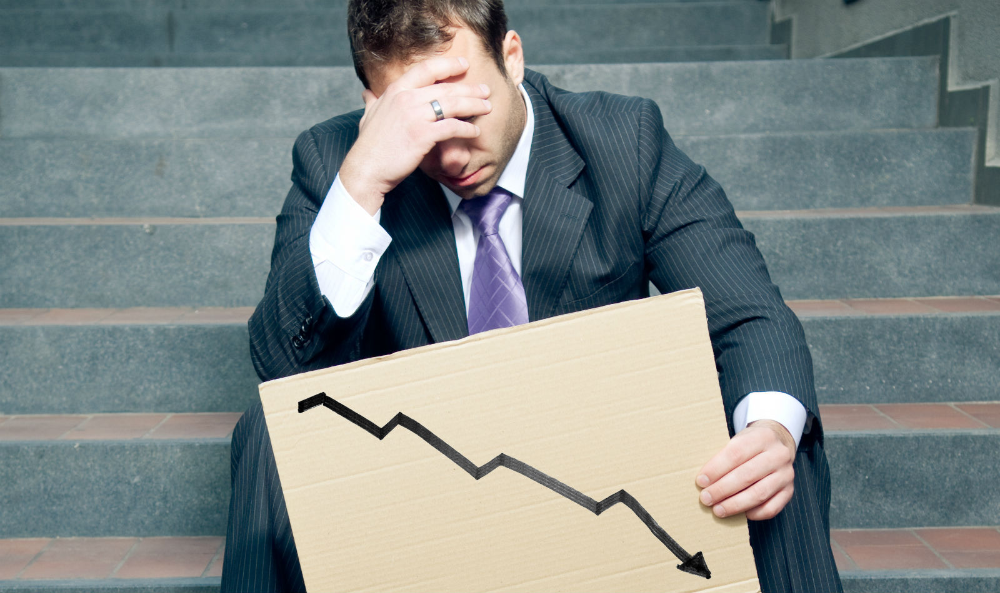

El desempleo es uno de los problemas sociales más graves que afecta a millones de personas en todo el mundo.

Inestabilidad Económica
La falta de empleo genera una profunda inestabilidad económica en las personas y sus familias. Sin ingresos, se vuelve difícil cubrir necesidades básicas como la alimentación, vivienda y salud, lo que crea una crisis económica personal que puede tener efectos duraderos.
Aumento de la Criminalidad
El desempleo prolongado puede llevar a situaciones de desesperación en las que algunos individuos recurren a actividades ilegales para sobrevivir. La falta de oportunidades laborales está relacionada con un aumento de la criminalidad, particularmente en áreas vulnerables.
Descontento Social
Cuando el desempleo es elevado, se genera un fuerte descontento social. Las personas sienten frustración y desesperanza al no encontrar oportunidades para mejorar su situación económica. Este descontento puede derivar en protestas, disturbios y conflictos sociales.
Impacto en la Salud Mental
El desempleo no solo afecta la economía familiar, sino también la salud mental de quienes lo padecen. La ansiedad, el estrés y la depresión son comunes entre las personas que no encuentran empleo, lo que afecta su bienestar general y su capacidad para encontrar trabajo.
Video Informativo
A continuación, se presenta un video que profundiza en el tema del desempleo, sus causas y consecuencias. Es fundamental comprender la magnitud de este problema social para poder abordarlo adecuadamente.